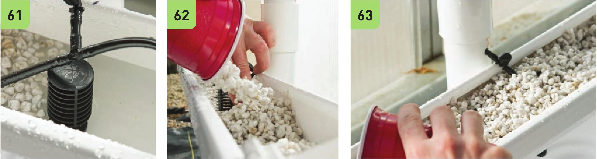

Planting Test the irrigation system before planting. Fill the reservoir with enough water to cover the pump, turn on the pump, and check that each level is receiving water. Adjust the flow to each level by adjusting the shutoff valves. This irrigation test will also help clean out the irrigation lines and catch any loose plastic particles left over from the assembly. Dump the test water. 61 Place the Active Aqua screen fittings over the V2" drain grommets before filling each trough. 62 Pre- rinse the perlite in a bucket. This will help keep the system clean. Fill each trough with perlite. 63 The amount of space you leave at the top of each trough will depend on the amount of plants you plan to add. The seedling plugs will take up space in the trough, so filling the trough to the top before transplanting is not recommended. 64 Fill the reservoir with clean water and prepare a nutrient solution specific to the crop you plan on planting (see System Maintenance chapter). 65 Turn on the pump and check to see that each level is receiving nutrient solution. 66 Tra nsplant the seedlings. Additional Options Reservoirs There are many alternative reservoirs that could be used with this rain gutter system. A nontranslucent plastic storage tote, a 5-gallon bucket, or even a small pond would work as a reservoir. It is important to cover the reservoir to reduce the development of algae, which can attract fungus gnats that can potentially damage plant roots. If growing in a warm climate, it may be beneficial to bury the reservoir to keep the nutrient solution cool. 134 DIY HYDROPONIC GARDENS
